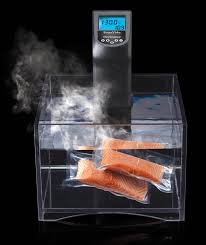

posted by BGB, November 15, 2012
Low and Slow
This week I am extremely excited about a new cooking technique called sous vide. In sous vide cooking, you submerge the food (usually vacuum-sealed in plastic) into a water bath that is precisely set to the target temperature you want the food to be cooked to. In his book, Cooking for Geeks, Jeff Potter describes it as ultra-low-temperature poaching
.
Next month, we will be serving Sous Vide Salmon with Dill Hollandaise. To reserve a seat at the chef table, contact us before .
blackgoose@example.com
555-336-1800
Warning: Sous vide cooked salmon is not pasteurized. Avoid it if you are pregnant or have immunity issues.